L’architettura non è solo linguaggio: è un atto di responsabilità. Ogni scelta formale modella l’esperienza dello spazio, condiziona il comportamento del corpo, costruisce percezioni, orienta le emozioni. Luce, materia, atmosfera e densità non sono variabili estetiche: sono decisioni strutturali che definiscono la qualità del mondo abitabile. Questa scheda mostra opere in cui la forma nasce da una consapevolezza profonda della responsabilità progettuale.
A.
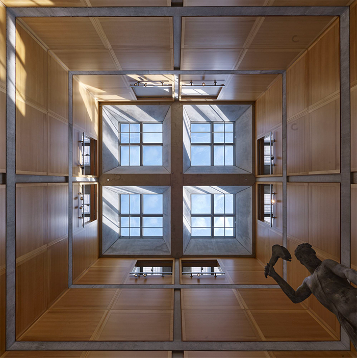
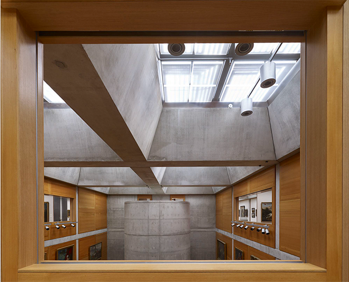
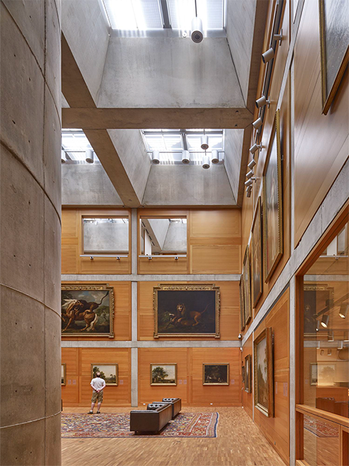
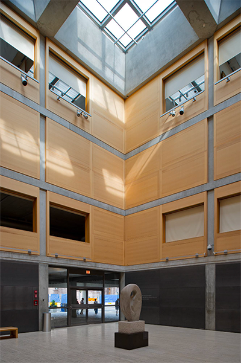
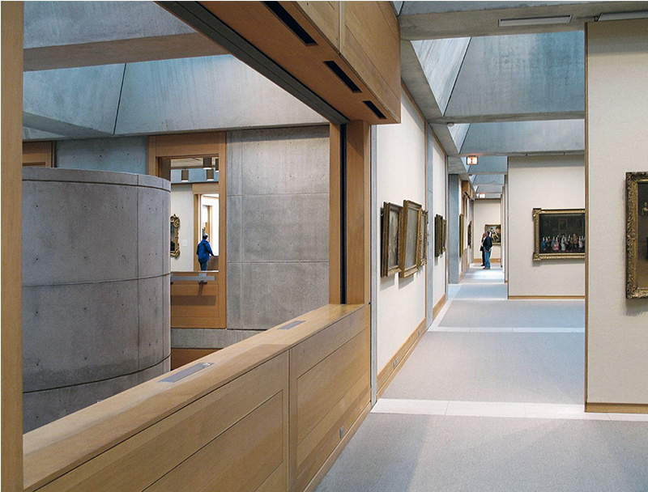
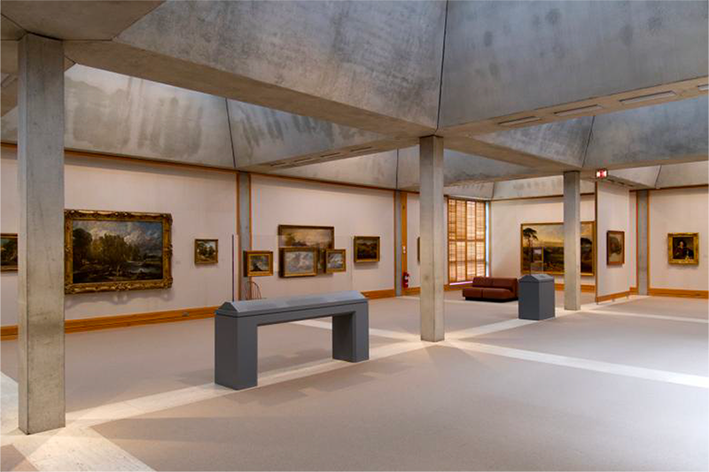
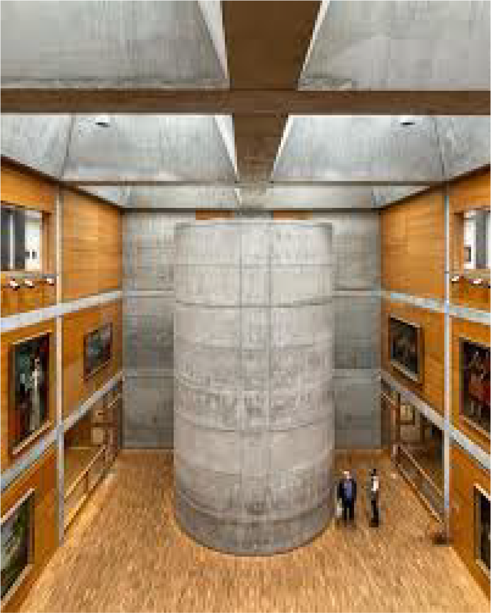
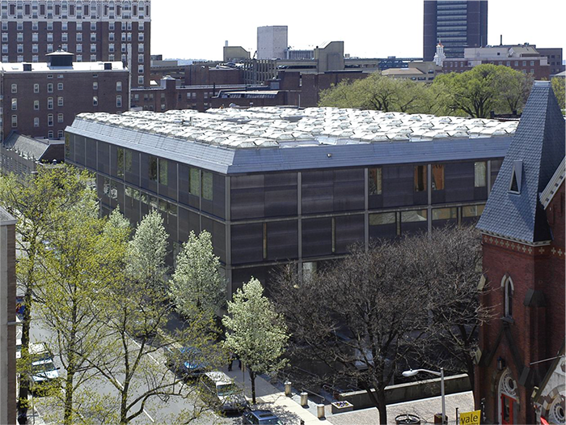
Il Yale Center for British Art rappresenta una delle espressioni più mature del pensiero di Louis Kahn ed è un caso esemplare per la presente scheda di approfondimento, dedicata alla responsabilità del progetto e allo spazio come esperienza vissuta.
In questo edificio, la responsabilità architettonica non è un principio astratto, ma una qualità che si manifesta direttamente nel modo in cui lo spazio viene percepito, attraversato e abitato nel tempo.
La grammatica architettonica — struttura, luce, materia, proporzione — non è esibita come linguaggio formale, ma organizzata come sistema di relazioni leggibili. La griglia strutturale in cemento non è un vincolo compositivo, bensì un dispositivo di orientamento percettivo: rende lo spazio comprensibile, stabile, affidabile. Ogni ambiente è misurato per sostenere un’esperienza calma e continua, in cui il corpo non è sollecitato, ma accompagnato.
La luce naturale è il principale strumento attraverso cui questa responsabilità si concretizza. I lucernari zenitali, filtrati e controllati, non producono effetti spettacolari, ma una luminosità diffusa che costruisce un tempo lento della visione. La luce non invade lo spazio, lo misura; non drammatizza, ma chiarisce. In questo modo, l’esperienza del visitatore diventa centrale: lo spazio non distrae, non impone una direzione emotiva, ma permette una relazione attenta e rispettosa con le opere e con il luogo.
Anche la materia partecipa a questa etica dello spazio. Cemento, acciaio opaco, quercia bianca e tessuti naturali generano un equilibrio tra gravità e calore, tra struttura e tattilità. Ogni scelta contribuisce a costruire un ambiente in cui la presenza dell’architettura è costante ma mai dominante.
In relazione al tema della lezione, il progetto di Kahn dimostra che la responsabilità del progetto consiste nel prendersi cura dell’esperienza vissuta. Lo spazio non è un’immagine, ma una condizione di permanenza, orientamento e durata. L’architettura diventa così un atto etico: non afferma se stessa, ma costruisce le condizioni per un’esperienza umana misurata, dignitosa e consapevole.
B.
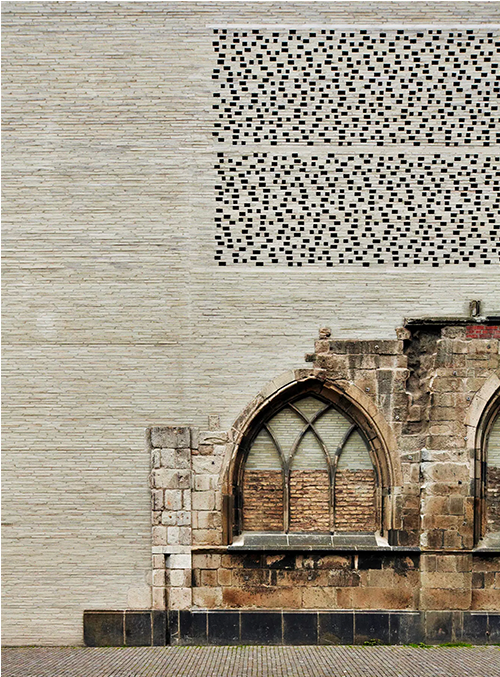
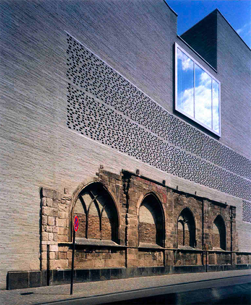
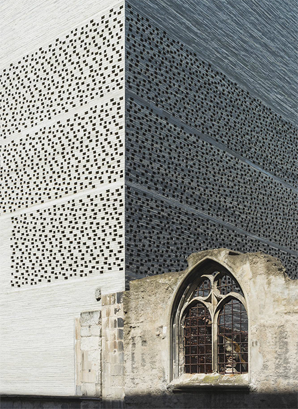
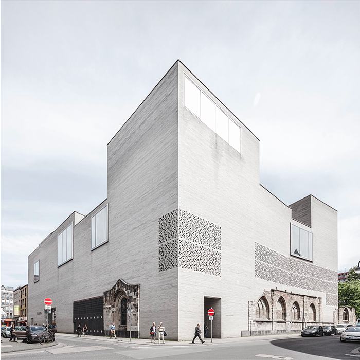
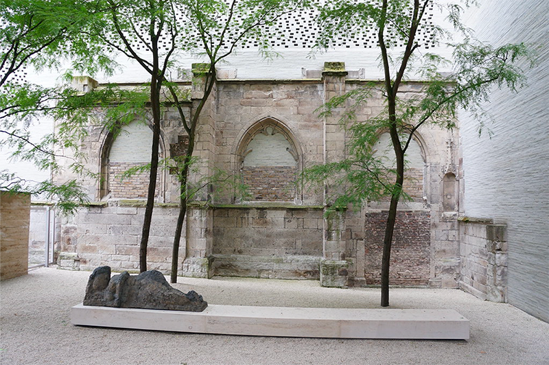
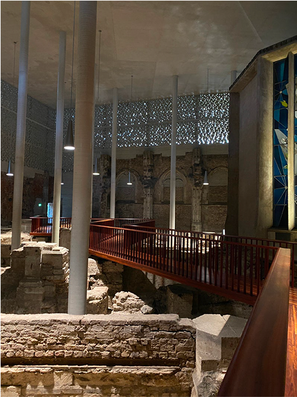
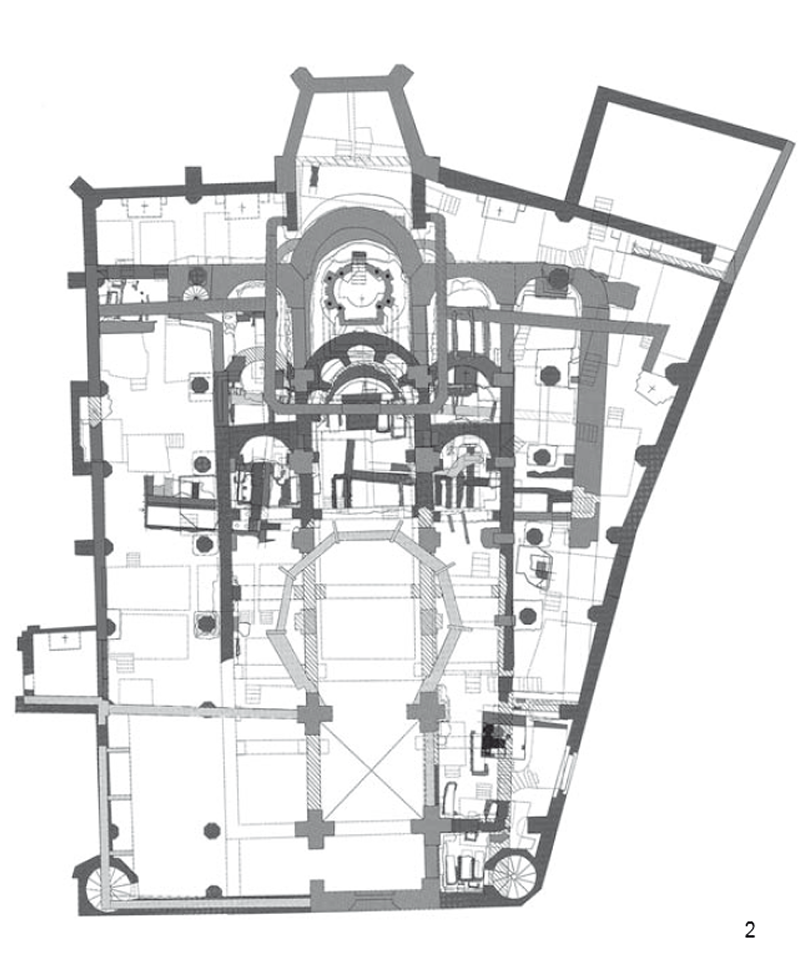
Il Kolumba Museum di Peter Zumthor rappresenta un caso centrale, perché affronta la responsabilità architettonica non come problema formale, ma come costruzione consapevole dell’atmosfera e del tempo.
Edificato sulle rovine della chiesa di Santa Columba, distrutta durante la Seconda guerra mondiale, il progetto non impone una nuova forma sopra ciò che resta, ma si costruisce con ciò che resta. Zumthor assume un atteggiamento di ascolto: frammenti archeologici, vuoti, tracce materiali e memorie non vengono musealizzati come oggetti, ma integrati in un campo spaziale unitario, capace di sospendere la percezione del tempo lineare.
La responsabilità del progetto si manifesta qui come responsabilità sensoriale. Luce filtrata, murature porose, spessori profondi, suoni ovattati e variazioni di temperatura costruiscono un’esperienza che coinvolge il corpo prima ancora dello sguardo. La prospettiva non guida, ma lascia emergere lo spazio attraverso l’attraversamento lento. Il visitatore non è condotto, ma immerso.
La forma architettonica non è dichiarata in modo evidente. Emerge come sintesi necessaria di materiali, luce e vuoto. I mattoni grigi, sottili e traforati, non definiscono solo un involucro, ma regolano il passaggio dell’aria e della luce, rendendo percepibile il tempo che scorre: le ore del giorno, le stagioni, il mutare delle ombre. L’architettura non rappresenta la memoria, la rende esperibile.
In relazione al tema della lezione, il Kolumba dimostra che la responsabilità del progetto non si esaurisce nella correttezza funzionale o strutturale, ma riguarda il modo in cui lo spazio agisce sulla percezione, sulla memoria e sulla durata dell’esperienza. Costruire diventa un atto di cura: del silenzio, del vuoto, del tempo condiviso.
Zumthor mostra che l’architettura può assumersi la responsabilità di non imporsi, ma di creare le condizioni per un’esperienza profonda, lenta e consapevole dello spazio vissuto.
C.
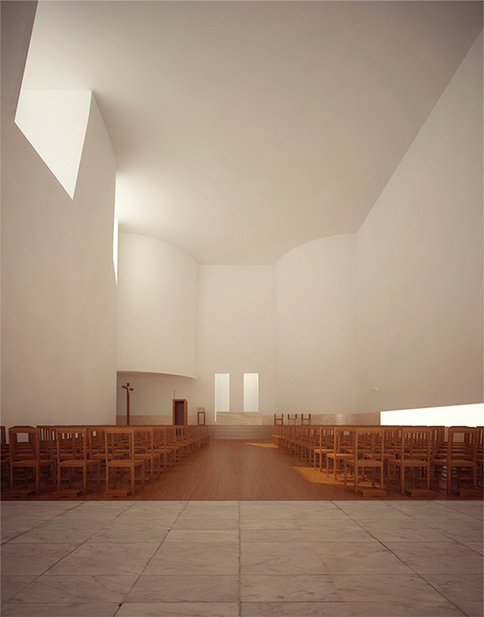
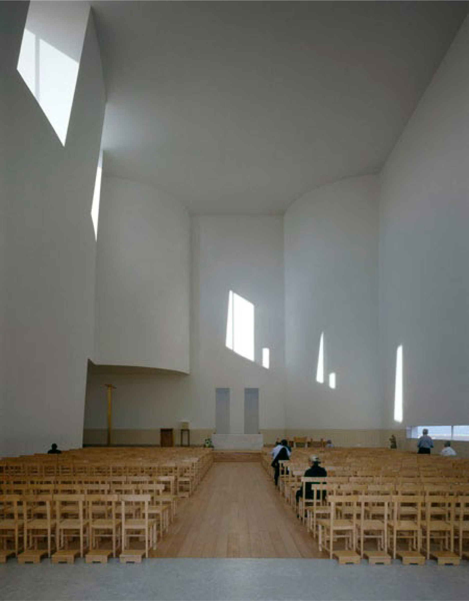
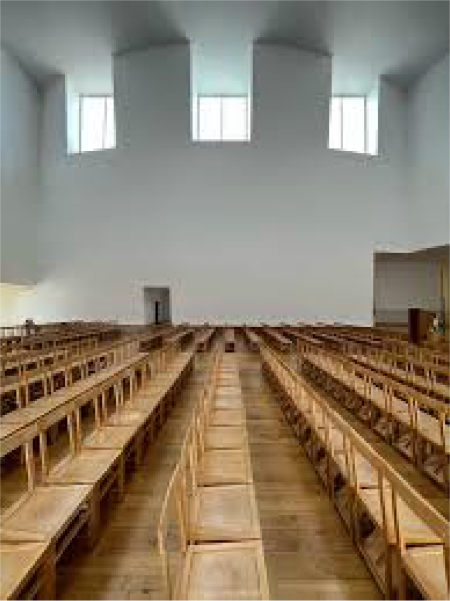
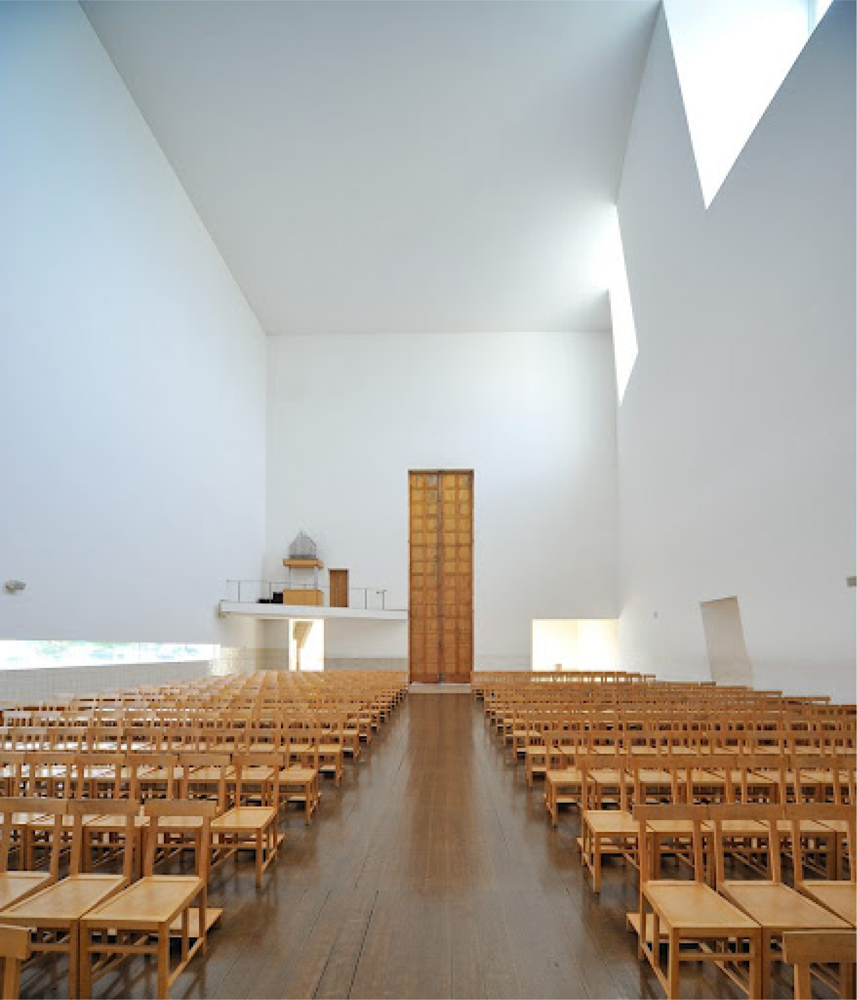
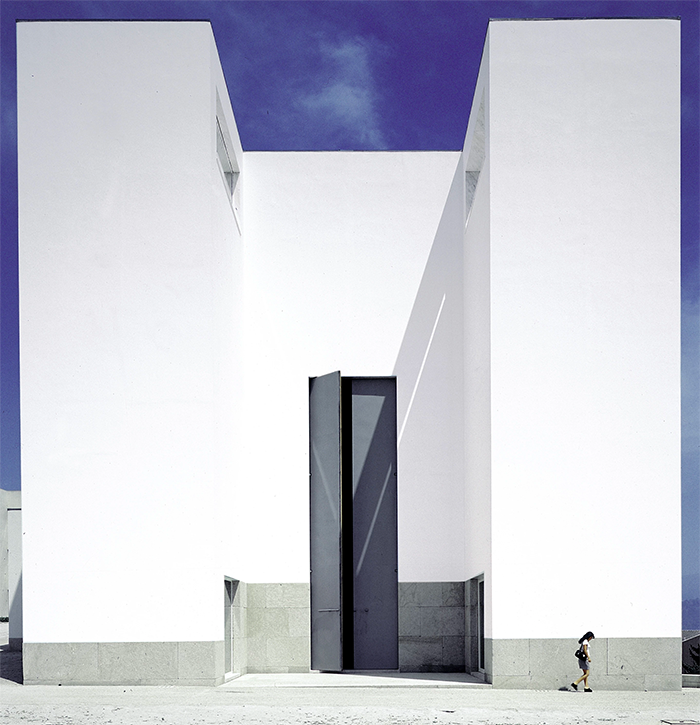
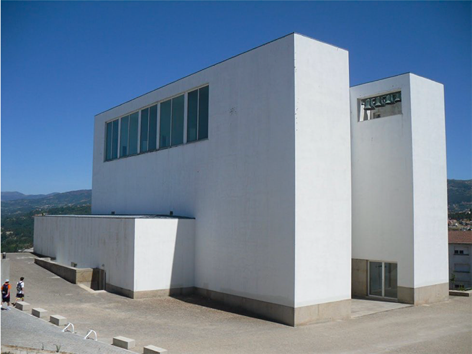
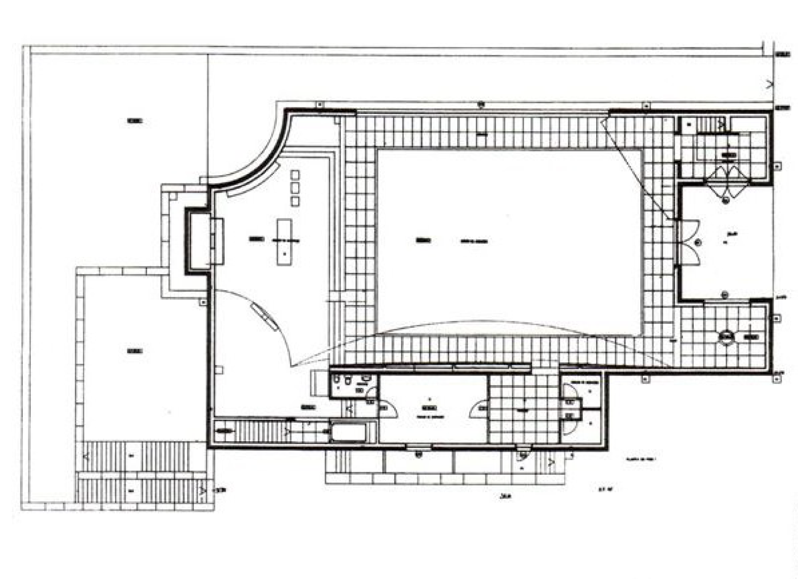
Nella Chiesa di Santa Maria a Marco de Canaveses, Álvaro Siza realizza un’architettura che si offre come esperienza interiore prima ancora che come forma. Il progetto rinuncia a ogni simbolismo esplicito e a ogni monumentalità retorica, assumendo invece la responsabilità di costruire uno spazio in cui la spiritualità emerge attraverso la qualità dell’esperienza vissuta.
In relazione al tema di questa scheda, la responsabilità del progetto si manifesta come controllo rigoroso dei mezzi e come adesione a un’etica della forma necessaria. Luce naturale, superfici bianche, proporzioni misurate, peso della materia e silenzio compositivo sono gli strumenti attraverso cui Siza articola uno spazio fatto di tensione, attesa e rivelazione. Nulla è aggiunto, nulla è enfatizzato: ogni elemento è calibrato per agire sulla percezione del corpo nello spazio.
La luce non entra in modo uniforme, ma è costruita come sequenza di eventi: tagli verticali, aperture laterali, lucernari e fenditure che modulano il rapporto tra interno ed esterno, tra gravità e trascendenza. La profondità non è scenografica, ma temporale: lo spazio si chiarisce progressivamente, accompagnando lo sguardo e il movimento con estrema precisione.
La grammatica architettonica — luce, proporzione, soglia, vuoto — è ridotta all’essenziale, ma proprio questa economia genera una sintassi potente. Il percorso, la disposizione delle masse, il rapporto tra pavimento, pareti e copertura costruiscono un campo di forze in cui il corpo è costantemente messo in relazione con la luce e con il silenzio. L’architettura non impone un significato, ma crea le condizioni per un’esperienza.
In questo senso, Siza non rappresenta il sacro: lo evoca. La responsabilità progettuale coincide con la rinuncia all’eccesso e con la cura della misura. La chiesa non è un oggetto da osservare, ma uno spazio da abitare lentamente, in cui luce, materia e corpo entrano in risonanza.
All’interno della lezione, il progetto di Siza mostra come la responsabilità del progetto consista nel costruire spazi capaci di accogliere l’esperienza umana nella sua dimensione più profonda, trasformando l’architettura in atto di precisione percettiva e di ascolto.